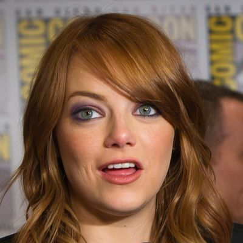

あらすじネタバレあり
あらすじを読む（結末までのネタバレを含みます）
1. 両親の飛行機
ピーターの両親が、飛行機の中でおそわれる。
2. 卒業の日
スパイダーマンとして大忙しのピーターは、グウェンとの約束になやみ、別れを決める。
3. マックスの事故
オズコープの事故で、マックスが電気の体になる。
4. ハリーの願い
病気のハリーは、スパイダーマンの血で自分を治したいと考える。
5. 発電所と時計塔
停電した街を救うため、ピーターとグウェンは力を合わせる。
作品ガイド · 2014
映画だけでは分かりにくいところを、あらすじ・相関図・用語でやさしく解説します。
『アメイジング・スパイダーマン』（2012年）の直接の続きです。先に1作目を観ておきましょう。
1作目の最後で、ピーターはグウェンを危険に巻きこまないと約束しました。
1作目から続く、ピーターの両親のなぞの答えが出ます。
エンドクレジットの途中の場面は、別の映画（『X-MEN：フューチャー&パスト』）の映像で、この物語の続きではありません。
ピーターを中心に、『アメイジング・スパイダーマン2』（2014年）に登場する人物の関係をまとめました。
※著作権の関係で、映画の場面写真やポスターなど、映画に出てくる姿の写真は使えません。顔写真はすべて、自由に使ってよい許可のある俳優本人の写真です（人間でないキャラクターはこのサイトで作ったイラスト、写真が見つからなかった人物は頭文字のアイコン）。
ドラッグで移動、ピンチ（PCはホイール）で拡大・縮小。人物をタップすると説明が開きます。

グウェン・ステイシー主要人物 ・ エマ・ストーン卒業生代表顔写真は、Wikimedia Commons にある俳優本人の写真（自由に使えるライセンスのもの）を、正方形に切り抜いて縮小し、使っています。人間でないキャラクターはこのサイトで作ったイラスト、写真のない人物は仮のアイコン（名前の頭文字）です。
ピーターの両親が、飛行機の中でおそわれる。
スパイダーマンとして大忙しのピーターは、グウェンとの約束になやみ、別れを決める。
オズコープの事故で、マックスが電気の体になる。
病気のハリーは、スパイダーマンの血で自分を治したいと考える。
停電した街を救うため、ピーターとグウェンは力を合わせる。
結末に関わる内容を含みます。
クモの研究には、父リチャードの遺伝子が使われていたためです。そのため、クモの力をうまく受けつげるのはパーカー家の血を引く人だけでした。
スパイダーマンの血をことわられたハリーは、オズコープにあったクモの毒を自分に打ちます。体が変わり、緑の怪人グリーン・ゴブリンになってしまいます。
時計塔の戦いで落ちたグウェンを、ピーターは糸で受け止めようとしますが、間に合わず、グウェンは亡くなります。原作のまんがでも大きな出来事として知られる場面です。
この作品のはじめにスパイダーマンに捕まった強盗、アレクセイ・シツェビッチが、サイの形の機械のスーツを着た「ライノ」として暴れます。物語は、ピーターが戦いに向かうところで終わります。
電気の体になったマックスと、スパイダーマンがタイムズスクエアで出会います。マックスの心がこわれていく、大事な場面です。
卒業式でのグウェンのスピーチが、物語の最後でもう一度大切な意味を持ちます。
この作品の出来事は、のちの『スパイダーマン：ノー・ウェイ・ホーム』で、このピーターの大きな心の傷として語られます。
エンドクレジットの途中の映像は、別の映画『X-MEN：フューチャー&パスト』のもの。